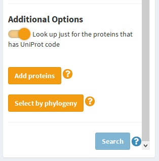

Get started
To start looking in Brenda, we need your Brenda account (why?). If you do not have one, you can visit: Brenda Registration Once you have your account, we can look for the enzymes you need and the numerical parameters you request.
Enzyme query
To get the enzymes you need, we offer three different kind of options. This inputs are in the select enzyme section.
EC Number
Enzymes are classified by the
IUBMB
according to the reaction they catalize. This corresponds to the
EC Number, which is a four number code, with the first one indicating the subclass
such as oxidoreductases, transferases, hydrolases, lyases, isomerases, ligases and translocases.
The second number indicates the functional group of reaction, the third indicates an specific
type of molecule and the fourth the last
level and the reaction itself. More info:
EC number
If you know the EC number of your enzyme of interest, indicate it in the input
shown in the next image:
Enzyme name
Enzymes have a lot of names that differ depending on the gen codifiding it, the reaction, historical reasons and so on. Brenda groups them according to its ec number, however, they are associated to the multiple names in which they are called in literature. This category is showed in the Brenda web page with the name 'Synonyms'.
Due to the length of the list, that contains every synonym of every type of enzyme on the database, this names are separeted in subclasses. Then, if you know just a particular name of your enzyme, first you have to know in which of this categories it is:
.jpg)
For the next step you have to select the functional group that is involved in the catalyzed reaction, such as:
.jpg)
In the follow space, you can type the name of the enzyme you know. You can search for the list below, remembering that it is a long list. This selector autocompletes your input and shows the posible names that are registered in the Brenda database, select the one that fits most with the name you know.
.jpg)
After you press the search button, a short list of posible type of enzyme is going to be shown (it can be just one). The selector shown the ec number and the Brenda recommended name. Select the one you are looking for, press 'go', and go on with the numerical parameter selector.
.jpg)
Before the query
At this point, a table showing all the organism that has a protein with the same catalytic function define in the ec number, available in Brenda is generated. This table contains the next columns that depend on the enzyme type: ec number, systematic name (this could be empty) and recommended name; and the next columns that depend on the organism: Uniprot, organism (scientific name) and commentary. This last one is hidden by default, but can be shown selecting the "show the comentary column" checkbox.
.jpg)
The way to proceed after this point is described in "Queries from the organsm table" section . In this section, the optional proceeds to have a complex query are described.
Add Enzymes to the query
If more than just one enzyme type is needed, you can add another ecnumber to the query. This proccess can be done virtually undefinely. To add ec numbers to your organism table (or protein table) look for the "Add proteins" button in the side bar panel.
After clicking it, you are going to be back at the enzyme section , make sure the welcome panel in the top of the page (just below the toolbar) says " The enzyme your enter will be added to the search" if this is not the case, please go back to the Protein table seccion (by dashboard menu or by the quick access button in toolbar showed below) and press the "Add proteins" button again.
.jpg)
If all is set, add enzymes to the query the same way the first ones were entered.
Erase the query
If you made a mistake and the ec number enter to the query is not the one you want to. You can erase this query and look for another one by clicking the "Go back and search another Enzyme" in the top//right corner.
.jpg)
In this case, the welcome panel should show:
.jpg)
Sadly, if you had more than one enzymes in the query, all of them are going to be erased.
Log out has the same effect. This is going to erase everything generated in the site. But, this has the advantage that specific tables is going to be saved
.jpg)
Unavoidable errors
This is an app on develpment...
Queries from the organism table
After the organism table ( Protein Table ) is generated, it can be used to search for numerical parameters , amino acids sequence or PDB codes with their respective link to the RCSB PDB (The Protein Data Bank of the Research Collaboratory for Structural Bionformatics).
If you are interested in just one of this queries, you can skip the other in this tutorial. They are not depended to each other.
Get PDB
Generete a table with the PDB codes and their links to the RCSB PDB is done by clicking the "Get PDB" button above the Protein Table as show below.
.jpg)
The generated table looks like this
.jpg)
The columns show the ec number, the organism, the PDB code and the link. If you click any of this link, you are going to be redirected to the PDB site with an image like this
Also, you can download the whole table clicking the blue button, or return to the Protein table section clicking the orange one
Get amino acids sequence
The uniprot code that some proteins have, are a distintive code provides by the Uniprot database , that a particular enzyme has. With this code you can access to the amino acids sequence of the protein. Brenda provides this code and the sequence with it. By clicking the "Get sequence" blue button, as show below, a table reporting the sequence found by BRENDA are going to be shown.
.jpg)
This table look like this
.jpg)
You can access to the sequence code by download a .txt file clicking the blue button. The sequence to be downloaded can be selected in the report table clicking the respective row or download all the found sequence switching the "Download all the list" button in the sidebar.
Get functional parameters
The complete functional parameters query tutorial is in the next section . However, to generete a table with the 12 numerical parameters available in Brenda for every protein in the Protein table, you have to activate the "Select all functional parameters" switch on the top of sidebar, let the "Search for all parameters" switch activated above the table and click the "Search for parameters" green button at the end of the sidebar.
.jpg)
Functional Parameters Query
Selecting parameters
Selecting by phylogeny
Other options of query
Filters
Summary table and quick access
This section describes 2 tools that are available at any moment in the app.
Summary table and where to find it
It is possible to generate a table showing how many attributes of each protein (differentating the ec number and the organism) have been found.
.jpg)
You can access this table by two ways. In the dashboard menu, located in the "Protein Search" seccion, or, by clicking the direct access toolbar with the icon. Once in the "Available Information" seccion click the "Refresh" blue button to generate or update.
.jpg)
Quick access toolbar
At the right\top corner there are four buttons in the toolbar. These buttons, called quick access, allow you to change the current seccion to:
= Tutorial seccion
= Protein table
= Summary table
.jpg)
= Principal page to log in or log out
.jpg)